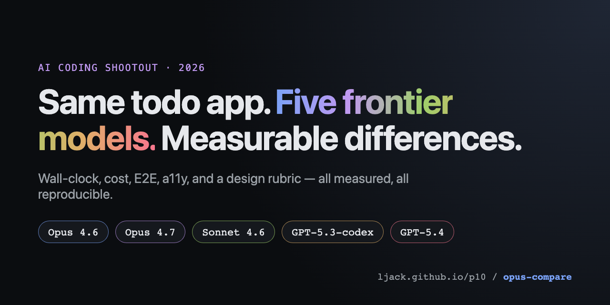

5-way AI coding shootout
2026-04-16
- Models
- 5
- E2E tests
- 60 / 60 ✅
- Winner
- mixed — see report
P10 · AI Daemon Mesh
P10 is a WebSocket-driven mesh where an AI agent, a master, a browser container, and a Telegram bridge coordinate to decompose specs, execute code, run tests, and report results — autonomously.

P10 coordinates specialist AI agents — planning, API, web, review — via a WebSocket event bus. It runs anywhere a Node process can run, embeds an in-browser WebContainer for live previews, and drops tasks onto a kanban board that survives restarts.
Source: github.com/ljack/p10